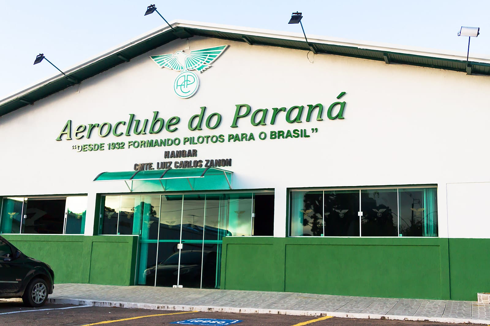
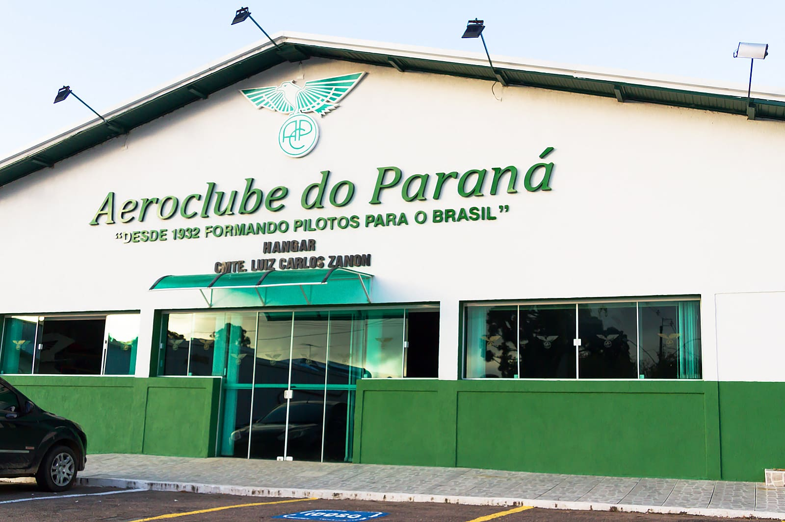
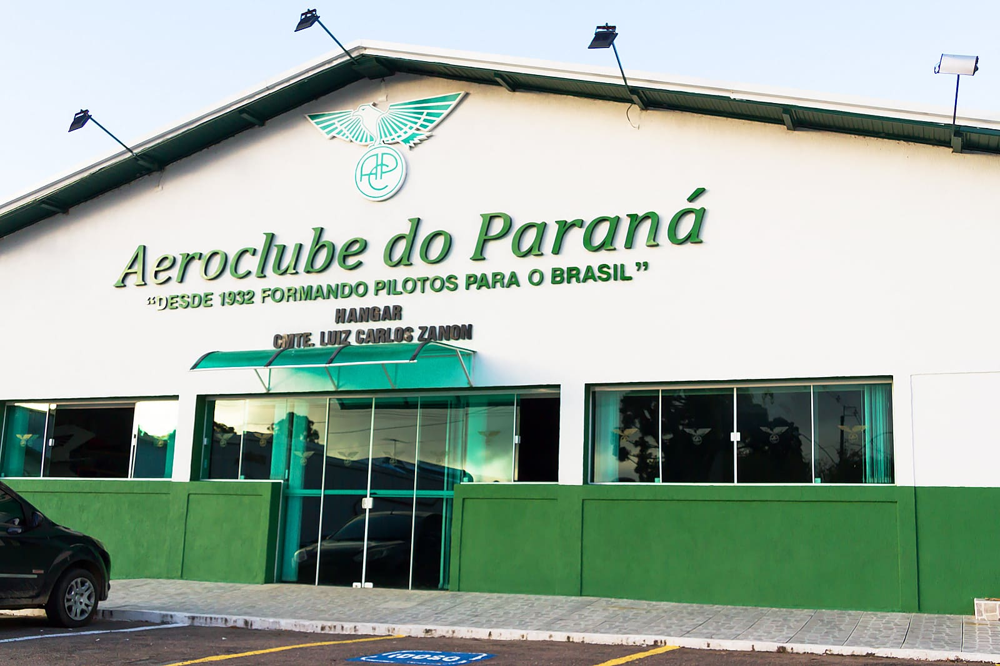

Descubra a História em Cada Imagem!
Explore algumas das nossas peças mais icônicas através deste carrossel e prepare-se para a imersão na Visita Virtual.

 

Explore algumas das nossas peças mais icônicas através deste carrossel e prepare-se para a imersão na Visita Virtual.
